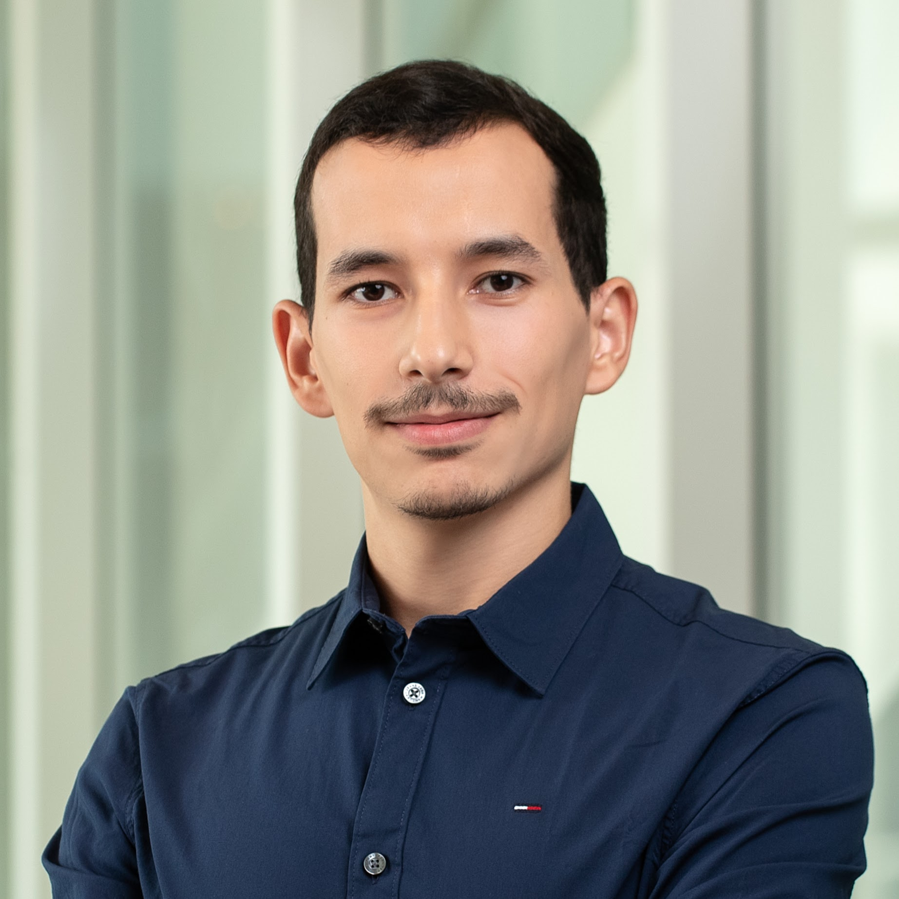

Ph.D. Student in Computer Science @New York University
NYUAD Global Ph.D. Fellow
I am a Ph.D. student at the NYU Tandon School of Engineering advised by Professor Riyadh Baghdadi. My research interests lie at the intersection of Machine Learning, Computer Systems, and High-Performance Computing.
My research leverages Deep Learning and Large Language Models (LLMs) to solve compiler optimization problems. Specifically, I design systems that explore code transformation spaces to generate highly efficient code for modern hardware. Previously, I was a Research Engineer at NYU Abu Dhabi and a Research Intern at MIT CSAIL (COMMIT group).
Status: I am actively seeking full-time opportunities starting Summer 2026. I am open to roles in both industry and academia where I can apply my expertise in ML and Systems.
Conducting research on AI-driven methods for automatic program optimization. Developing novel approaches using Large Language Models (LLMs) for compiler code generation and optimization.
Worked on data-driven approaches for modeling computer code performance. Contributed to the development of the Tiramisu compiler infrastructure.
Worked within the COMMIT group on automatic code optimization. Built deep learning models to guide the selection of efficient code transformations.